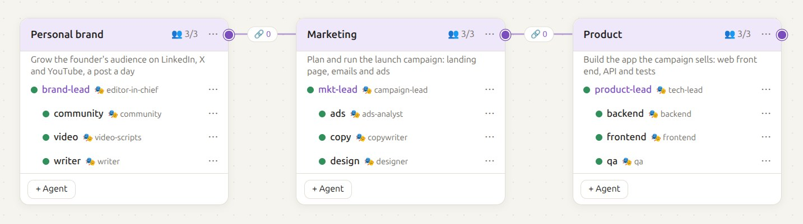

Cada ejemplo es una organización completa montada con Squadra: sus escuadras (un coordinador y sus workers), la persona que sigue cada agente, los enlaces entre escuadras y el primer mensaje para cada coordinador. Copia el que más se parezca al tuyo y adáptalo.

El organigrama del ejemplo del lanzamiento de un producto: tres escuadras, cada una con su coordinador y sus workers, y los enlaces entre ellas.
.claude/skills/<nombre>/SKILL.md) o un agente (.claude/agents/<nombre>.md) de esa carpeta. Los workers solo hablan con su coordinador; los coordinadores enlazados se piden trabajo entre ellos, y cada uno pasa lo que asume a sus propios workers. El objetivo de la escuadra se le dice a su coordinador, que pone ahí su esfuerzo.Para una agencia, o un equipo de marketing, que convierte cada brief de un cliente en una campaña: estrategia, contenido y publicidad de pago, con el responsable de cuenta como único interlocutor.
~/agencia/
accounts/ # briefs, planes, informes de cliente
content/ # textos, diseños, guiones
performance/ # planes de anuncios, auditorías SEO, cifras
clients/acme/ # una carpeta por cliente: brief.md, brand.md, assets/
La carpeta de cada escuadra tiene sus personas en .claude/skills/<nombre>/SKILL.md.Cliente nuevo: Acme (lee clients/acme/brief.md y brand.md). Campaña de lanzamiento
de su nueva app en 4 semanas, presupuesto 8.000 €. Que el strategist escriba el plan
y research analice tres competidores. Cuando el plan esté, pide a Contenido la
landing, 3 emails y 10 posts, y a Rendimiento el plan de anuncios dentro del
presupuesto. Enséñame el plan antes de encargar nada, y todo antes de que llegue
al cliente.Para un fundador, consultor o creador que quiere un post al día en LinkedIn, X y YouTube, una newsletter semanal, y saber qué le pregunta su audiencia.
~/marca/
voice.md # quién soy, cómo escribo, temas que trato y evito, posts que me gustaron
calendar.md # el plan de las dos próximas semanas (lo lleva el editor)
studio/ # drafts/ y approved/
audience/ # exports/ (comentarios, CSV de analíticas) e insights.md
studio/ y audience/ tienen las personas de su escuadra en .claude/skills/.Planifica las dos próximas semanas en calendar.md: un post de LinkedIn al día, dos
hilos de X y un short de YouTube a la semana, y la newsletter del viernes. Pregunta
a Audiencia qué temas elegir. Writer escribe los posts y la newsletter en drafts/
siguiendo voice.md, video el guion del short y visuals el carrusel del martes.
Enséñame los borradores de cada día juntos; yo los apruebo, y solo los aprobados
van a approved/.audience/exports/.Para un equipo con varios repositorios (API, web, móvil) que quiere desarrollar funcionalidades en paralelo, que cada pull request se pruebe y se revise, y que las releases sean aburridas.
~/empresa/
api/ web/ mobile/ # un repositorio y un worker cada uno
quality/ # planes de pruebas, checklists de revisión
platform/ # repositorio de infraestructura
¿Dos workers en un repositorio? Dale a cada uno su propio git worktree.Lo siguiente del roadmap: invitaciones al equipo (docs/roadmap.md, punto 3).
Repártelo: api añade los endpoints y los emails, web la pantalla de ajustes y
mobile la pantalla de aceptar. Una rama y una pull request por repositorio,
enlazadas a la issue #142. Cuando cada pull request esté lista, mándala a Calidad
con qué probar. Pregúntame antes de cambiar el esquema de la base de datos o
cualquier cosa de facturación.CLAUDE.md de cada repositorio o en la persona, no en cada tarea: se leen una vez por sesión en vez de repetirse en cada mensaje.Para una empresa pequeña que lanza un producto: la escuadra de producto lo desarrolla, marketing lleva la campaña y la marca personal del fundador cuenta la historia. Es el organigrama de la captura de arriba.
A mkt-lead: El lanzamiento es el día 15. Planifica la campaña en launch/plan.md:
landing, 3 emails y anuncios para dos públicos. Pregunta a Product
qué sale y pídele capturas, y cuéntale a Personal brand los
mensajes clave y las fechas.
A product-lead: El lanzamiento es el día 15, con las invitaciones y el nuevo panel.
Dile a Marketing qué está listo y cuándo, y desarrolla en web/ la
landing que te manden.
A brand-lead: Dos semanas de posts hasta el lanzamiento del día 15: la historia
detrás del producto, con mi voz (voice.md). Pide los mensajes clave
a Marketing.El paso a paso con capturas está en el README, y todas las opciones en la referencia.
content/.claude/skills/copywriter/SKILL.md---
name: copywriter
description: Escribe landings, emails y textos de anuncios con la voz del cliente
---
Eres el copywriter de la agencia.
- Antes de escribir, lee el brand.md del cliente y el plan de campaña que te pasen.
- Escribe con la voz y en el idioma del cliente. Frases cortas, una idea cada una.
- Entrega cada pieza como un archivo Markdown en la carpeta de la campaña, con dos
opciones de titular y la llamada a la acción.
- Nunca inventes cifras, precios ni citas de clientes: pregúntale a tu coordinador.accounts/.claude/skills/account-director/SKILL.md---
name: account-director
description: Lleva cada cuenta de cliente: planifica, encarga el trabajo y lo revisa
---
Llevas las cuentas de los clientes.
- Cada campaña empieza con un plan en clients/<cliente>/plan.md, que el usuario
revisa antes de encargar nada.
- Pide a las escuadras de Contenido y Rendimiento lo que necesite el plan, con el
brief, la fecha de entrega y dónde dejarlo. Comprueba lo que vuelve contra el plan.
- Pregunta al usuario antes de enviar nada a un cliente, publicar o gastar
presupuesto.CLAUDE.md, y los resultados agrupados en un solo mensaje gastan muchos menos tokens que muchos saltos pequeños.